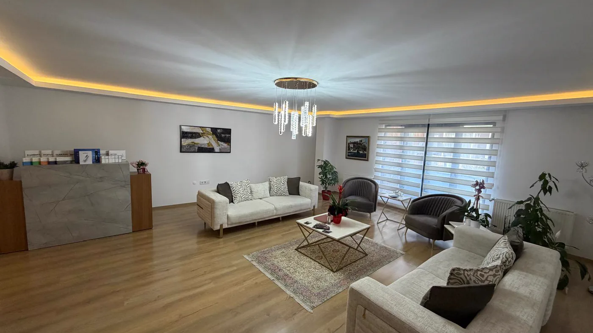

İletişim · Bakırköy
Randevu için arayın ya da yazın
Muayenehane Bakırköy’dedir. Randevu için aramanız, WhatsApp’tan yazmanız ya da aşağıdaki formu doldurmanız yeterli. Formu göndermek randevunun onaylandığı anlamına gelmez; mesajınızı aldıktan sonra mesai saatleri içinde sizi arıyor, gün ve saati sizinle konuşarak belirliyoruz.

Adres ve ulaşım
Muayenehaneye ait iletişim kanalları aşağıda listelenmiştir. Bu listede yer almayan numara ve hesapların muayenehaneyle bir ilişkisi yoktur.
- AdresCevizlik Mah. Ebuzziya Cad. No:47/1
Bakırköy / İstanbul - Telefon0539 933 08 08
- WhatsApp+90 539 933 08 08
Randevu ayarlamak ve adres sormak içindir; şikâyetler mesajla değerlendirilmez. - E-postainfo@rahmicebeci.com.tr
- Çalışma saatleriPazartesi – Cumartesi: 09:00 – 19:00
Pazar: Kapalı
Sürekli kullandığınız ilaçların adları muayenede sorulur; kutuların fotoğrafı da yeterlidir. Son aylarda yaptırılmış bir kan tetkiki ya da önceki bir estetik uygulamaya ait belge varsa onu da yanınıza alın. Hazırlık listesi, ilaç ve önceki uygulama başlıklarını randevudan önce gözden geçirmenize yardımcı olur.
Toplu taşımayla gelirken
Marmaray’ın Bakırköy istasyonu ya da Bakırköy’deki metro durakları (İncirli dâhil) toplu taşımada en pratik seçeneklerdir. İstasyondan sonrası için yukarıdaki yol tarifi bağlantısını kullanabilirsiniz.
Araçla gelirken
Sahil yolundan ya da İncirli yönünden Bakırköy merkezine ulaşabilirsiniz. Merkezde yol kenarına park etmek çoğu saatte zordur; yakındaki otoparklardan birini tercih etmek ve trafiğe pay bırakmak zaman kazandırır.
Talep formu
Randevu için yazın
Aşağıdaki alanlar, sizi arayabilmemiz için gerekenlerle sınırlıdır. Mesai saatleri içinde telefonla, telefona ulaşamazsak e-postayla size dönüyoruz.
Formdan tıbbi görüş verilmez. Şikâyetinize, tanılarınıza ve kullandığınız ilaçlara dair ayrıntıları buraya değil, muayenede hekime anlatın. Formda yalnızca randevu için zorunlu olan bilgileri istiyoruz.
Randevu akışı
Randevu günü için birkaç not
Tek hekimli bir muayenehanede her randevu bir sonrakine bağlıdır; aralarda odanın hazırlanması için de süre bırakılır. Aşağıdaki küçük ayrıntılar hem sizin hem de sizden sonra gelecek kişinin beklemesini azaltır.
Saatinde gelmek
İlk muayenede öykü alındığı için görüşme uzun sürer ve randevular birbirine bağlıdır. Birkaç dakikalık gecikme bile görüşmenin kısalmasına ya da ertelenmesine yol açabilir. Özellikle akşamüstü Bakırköy trafiği yoğun olabilir; buna pay bırakın.
İptal ve erteleme
Gelemeyecekseniz olabildiğince erken haber verin; boşalan saat bekleyen bir başka kişiye verilebilir. Bunun için telefonu ya da WhatsApp hattını kullanabilirsiniz.
Bir yakınınızla gelebilirsiniz
Görüşmeye isterseniz bir yakınınızla gelebilirsiniz. Planı ve sonrasındaki bakım adımlarını iki kişinin dinlemesi, evde hatırlamayı kolaylaştırır.
Kontrol görüşmeleri
Kontrolün ne zaman yapılacağı işleme göre değişir; tarihi muayenede birlikte belirleriz. Unutursanız bir telefonla yeni gün ayarlanır.
Mahremiyetiniz
Muayene kapalı odada, hekimle baş başa yapılır. Takip için fotoğraf gerekirse yalnızca tıbbi kaydınız için ve onayınızla çekilir; hiçbir yerde yayımlanmaz.
Belge ve rapor
Muayene sonrasında belge ya da rapor ihtiyacınız olursa muayenehaneyi arayabilirsiniz. Belgenizi yalnızca siz ya da yazılı olarak yetkilendirdiğiniz biri teslim alabilir.
Bir uygulamadan sonra işlem bölgesinde ani ve orantısız şiddette ağrı, derinin solması ya da beyazlaması, ağ biçiminde mor renk değişimi ya da görmede bulanıklık veya kayıp gelişirse her dakika önemlidir. Göğüs ağrısı, nefes darlığı ya da hırıltılı solunum, dudakta veya dilde hızla büyüyen şişlik, yutkunamama, yaygın döküntüyle birlikte baş dönmesi veya bayılacak gibi olma ya da yüksek ateşle hızla yayılan kızarıklık da aynı biçimde acildir; bu durumlarda mesajınıza yanıt gelmesini beklemeyin. Vakit kaybetmeden 112 Acil Çağrı Merkezi’ni arayın ya da size en yakın acil servise gidin.
Formlar ve WhatsApp mesajları mesai dışında yanıtlanmaz; bu kanallar acil durumlarda kullanılamaz.
Buradan devam edin
Gelmeden önce işinize yarayabilecek sayfalar
Görüşmeye hazırlık notları
Muayeneye gelmeden önce aklınızdakileri not etmenize yardım eden kısa bir araç. Cihazınızda çalışır; yazdıklarınız bize gönderilmez.
Aracı açSoru ve yanıtlar
Hazırlıktan kontrol randevusuna kadar en çok merak edilenler.
Soruları görRandevudan kontrole
Her planın neden muayeneyle başladığı ve dört adımın hangi sırayla ilerlediği.
İnceleKVKK aydınlatma metni
Form aracılığıyla bize ulaşan kişisel verilerin işlenme amacı, saklama süresi ve KVKK kapsamındaki haklarınız.
Metni okuBağlı olduğumuz mevzuat
Bu sitede mali bilgiye, hasta yorumuna ve öncesi–sonrası görseline neden yer verilmediği.
Listeyi görBir adım ötesi
Aklınıza takılan bir şey varsa arayın
Yol tarifi, uygun gün ya da muayene süresiyle ilgili sorular için mesai saatlerinde bir telefon yeterli.